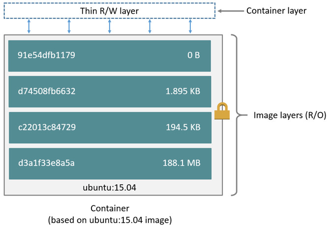
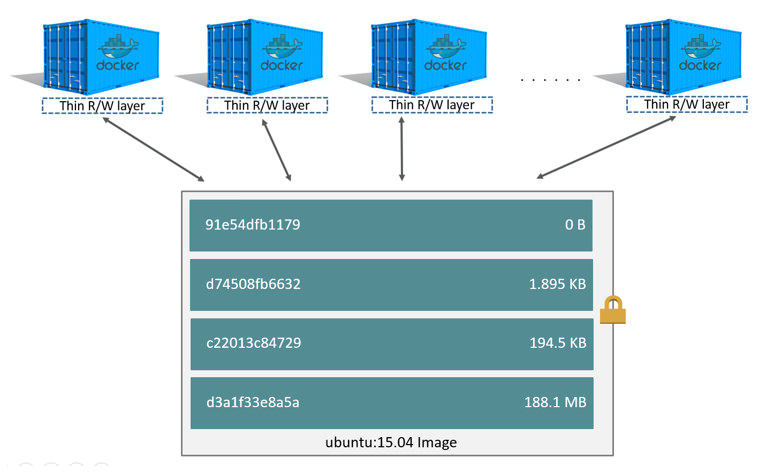

The ubuntu image contains a headless Ubuntu operating system with
only minimal packages installed.
Docker
Learn how to containerize your web applications with Docker.
On this page
Table of contents
A Docker primer
The following sections introduce the main Docker concepts by showing you how to create and run containers based on images, commit changes to images, and manage containers.
Install Docker
You need to have Docker installed on your machine. To do so, install Docker Desktop and use the recommended settings.
Make sure Docker is working
Run a hello-world container to make sure everything is installed correctly:
$> docker run hello-world
Unable to find image 'hello-world:latest' locally
latest: Pulling from library/hello-world
198f93fd5094: Pull complete
95ce02e4a4f1: Download complete
Digest: sha256:d4aaab6242e0cace87e2ec17a2ed3d779d18fbfd03042ea58f2995626396a274
Status: Downloaded newer image for hello-world:latest
Hello from Docker!
This message shows that your installation appears to be working correctly.
To generate this message, Docker took the following steps:
1. The Docker client contacted the Docker daemon.
2. The Docker daemon pulled the "hello-world" image from the Docker Hub.
(arm64v8)
3. The Docker daemon created a new container from that image which runs the
executable that produces the output you are currently reading.
4. The Docker daemon streamed that output to the Docker client, which sent it
to your terminal.
To try something more ambitious, you can run an Ubuntu container with:
$ docker run -it ubuntu bash
Share images, automate workflows, and more with a free Docker ID:
https://hub.docker.com/
For more examples and ideas, visit:
https://docs.docker.com/get-started/
If your output is similar, it means Docker is working correctly on your machine. Read the displayed message carefully, as it explains what just happened.
You can move on to the next section.
Run a container from an image
There are many official and community images available on the Docker
Hub. For this tutorial, start by pulling the official ubuntu
image from the hub:
$> docker pull ubuntu
Using default tag: latest
latest: Pulling from library/ubuntu
97dd3f0ce510: Pull complete
588d79ce2edd: Download complete
Digest: sha256:c35e29c9450151419d9448b0fd75374fec4fff364a27f176fb458d472dfc9e54
Status: Downloaded newer image for ubuntu:latest
docker.io/library/ubuntu:latest
Wait. I thought Docker containers did not contain an OS? In a typical Linux distribution, you usually get:
- A bootloader, which loads a kernel
- The kernel, which manages the system and loads an init system
- An init system, which sets up and runs everything else
- Everything else (binaries, shared libraries, etc)
The Docker Engine replaces the kernel and init system, and the container replaces “everything else”.
The ubuntu Docker image contains the minimal set of Ubuntu binaries and shared
libraries, as well as the apt package manager. For instance, systemd is not
included.
You can list available images with docker images:
$> docker images
IMAGE ID DISK USAGE CONTENT SIZE
hello-world:latest d4aaab6242e0 22.5kB 10.2kB
ubuntu:latest c35e29c94501 141MB 30.8MB
Run a container based on that image with docker run <image> [command...].
The following command runs an Ubuntu container:
$> docker run ubuntu echo "hello from ubuntu"
hello from ubuntu
Running a container means executing the specified command, in this case
echo "hello from ubuntu", in an isolated container started from an image,
in this case the Ubuntu image. The echo binary that is executed is the one
provided by the Ubuntu OS in the image, not your machine.
If you list running containers with docker ps, you will see that the container
we just ran is not running. A container stops as soon as the process
started by its command is done. Since echo is not a long-running command,
the container stopped right away:
$> docker ps
CONTAINER ID IMAGE COMMAND CREATED STATUS PORTS NAMES
You can see the stopped container with docker ps -a, which lists all
containers regardless of their status:
$> docker ps -a
CONTAINER ID IMAGE COMMAND CREATED STATUS PORTS NAMES
cbcf66e72043 ubuntu "echo 'hello from ub…" 23 seconds ago Exited (0) 22 seconds ago compassionate_tu
5827fb3b9354 hello-world "/hello" About a minute ago Exited (0) About a minute ago tender_diffie
You can remove a stopped container or containers with docker rm, using either
its ID or its name:
$> docker rm compassionate_tu 5827fb3b9354
compassionate_tu
5827fb3b9354
$> docker ps -a
CONTAINER ID IMAGE COMMAND CREATED STATUS PORTS NAMES
You can also add the --rm option to docker run to run a container and
automatically remove it when it stops:
$> docker run --rm ubuntu echo "hello from ubuntu"
hello from ubuntu
No new container should appear in the list:
$> docker ps -a
CONTAINER ID IMAGE COMMAND CREATED STATUS PORTS NAMES
Container isolation
Docker containers provide many security features. When you
start a container with docker run, you get:
-
Process isolation: processes running within a container cannot see, and even less affect, processes running in another container, or in the host system.
See the difference between running
ps -eanddocker run --rm ubuntu ps -e, which will show you all running processes on your machine, and the same as seen from within a container, respectively. -
File system isolation: a container has its own file system separate from your machine’s. See the difference between running the following commands:
ls -la /anddocker run --rm ubuntu ls -la /, which will show you all files at the root of your file system, and all files at the root of the container’s file system, respectively.bash --versionanddocker run --rm ubuntu bash --version, which will show you that the Bash shell on your machine is (probably) not the exact same version as the one in the image.uname -aanddocker run --rm ubuntu uname -a, which will show you your machine’s operating system and the container’s, respectively.
-
Network isolation: a container doesn’t get privileged access to the sockets or interfaces of another container. Of course, containers can interact with each other through their respective network interface, just like they can interact with external hosts. We will see examples of this later.
Run multiple commands in a container
You can run commands more complicated than echo. For example, let’s run a
Bash shell.
Since this is an interactive command, add the -i (interactive) and -t
(pseudo-TTY) options to docker run:
$> docker run -it ubuntu bash
root@e07f81d7941d:/#
This time you are running a Bash shell, which is a long running command. The
process running the shell will not stop until you manually type exit in the
shell, so the container is not stopping either.
You should have a new command line prompt (root@e07f81d7941d:/# in this
example), indicating that you are within the container:
root@e07f81d7941d:/#
You can now run any command you want within the running container:
root@e07f81d7941d:/# date
Fri Apr 20 13:20:32 UTC 2018
You can make changes to the container. Since this is an Ubuntu container, you
can install packages. Update of the package lists first with apt update:
root@e07f81d7941d:/# apt update
Get:1 http://archive.ubuntu.com/ubuntu xenial InRelease [247 kB]
...
Fetched 37.3 MB in 6s (6670 kB/s)
Reading package lists... Done
Building dependency tree... Done
Reading state information... Done
All packages are up to date.
Install the fortune package:
root@e07f81d7941d:/# apt install -y fortune
Reading package lists... Done
Building dependency tree... Done
Reading state information... Done
Note, selecting 'fortune-mod' instead of 'fortune'
The following additional packages will be installed:
fortunes-min librecode0
Suggested packages:
fortunes x11-utils bsdmainutils
The following NEW packages will be installed:
fortune-mod fortunes-min librecode0
0 upgraded, 3 newly installed, 0 to remove and 0 not upgraded.
Need to get 707 kB of archives.
After this operation, 2397 kB of additional disk space will be used.
Get:1 http://ports.ubuntu.com/ubuntu-ports noble/main arm64 librecode0 arm64 3.6-26 [621 kB]
...
Fetched 707 kB in 0s (1458 kB/s)
...
The fortune command prints a quotation/joke such as the ones found in fortune cookies
(hence the name):
root@e07f81d7941d:/# /usr/games/fortune
Your motives for doing whatever good deed you may have in mind will be
misinterpreted by somebody.
Let’s create a fortune clock script that tells the time and a fortune every 5 seconds.
The ubuntu container image is very minimal, as most images are, and doesn’t
provide any editor such as nano or vim. Install one now:
root@e07f81d7941d:/# apt install nano # or vim
Open a new file /usr/local/bin/clock.sh with your favorite editor:
root@e07f81d7941d:/# nano /usr/local/bin/clock.sh
Paste the following script into the file:
#!/bin/bash
trap "exit" SIGKILL SIGTERM SIGHUP SIGINT EXIT
while true; do
echo It is $(date)
/usr/games/fortune
echo
sleep 5
done
Make the script executable:
root@e07f81d7941d:/# chmod +x /usr/local/bin/clock.sh
Make sure it works. Since the /usr/local/bin directory is in the PATH by
default on Linux, you can simply execute clock.sh without using its absolute
path:
root@e07f81d7941d:/# clock.sh
It is Mon Apr 23 08:47:37 UTC 2018
You have no real enemies.
It is Mon Apr 23 08:47:42 UTC 2018
Beware of a dark-haired man with a loud tie.
It is Mon Apr 23 08:47:47 UTC 2018
If you sow your wild oats, hope for a crop failure.
Use Ctrl-C to stop the clock script. Then use exit to stop the Bash shell:
root@e07f81d7941d:/# exit
Since the Bash process has exited, the container has stopped as well:
$> docker ps -a
CONTAINER ID IMAGE COMMAND CREATED STATUS PORTS NAMES
e07f81d7941d ubuntu "bash" 6 minutes ago Exited (130) 1 second ago sweet_euclid
Commit a container’s state to an image manually
Retrieve the name or ID of the previous container, in this example sweet_euclid.
You can create a new image based on that container’s state with the docker commit <container> <repository:tag> command:
$> docker commit sweet_euclid fortune-clock:1.0
sha256:407daed1a864b14a4ab071f274d3058591d2b94f061006e88b7fc821baf8232e
You can see the new image in the list of images:
$> docker images
IMAGE ID DISK USAGE CONTENT SIZE
fortune-clock:1.0 2e94440daea5 351MB 94.8MB
hello-world:latest d4aaab6242e0 22.5kB 10.2kB
ubuntu:latest c35e29c94501 141MB 30.8MB
That image contains the /usr/local/bin/clock.sh script we created, so we can run it directly with
docker run <image> [command...]:
$> docker run --rm fortune-clock:1.0 clock.sh
It is Mon Apr 23 08:55:54 UTC 2018
You will have good luck and overcome many hardships.
It is Mon Apr 23 08:55:59 UTC 2018
While you recently had your problems on the run, they've regrouped and
are making another attack.
Again, our clock.sh script is a long-running command (due to the while
loop). The container will keep running until the script is stopped. Use Ctrl-C
to stop it (the container will stop and be removed automatically thanks to the
--rm option).
That’s nice, but let’s create a fancier version of our clock. Run a new Bash
shell based on our fortune-clock:1.0 image:
$> docker run -it fortune-clock:1.0 bash
root@4b38e523336c:/#
This new container is based off of our fortune-clock:1.0 image, so it
already contains what we’ve done done so far, i.e. the fortune command is
already installed and the clock.sh script is where we put it:
root@4b38e523336c:/# /usr/games/fortune
You are working under a slight handicap. You happen to be human.
root@4b38e523336c:/# cat /usr/local/bin/clock.sh
#!/bin/bash
trap "exit" SIGKILL SIGTERM SIGHUP SIGINT EXIT
while true; do
echo It is $(date)
/usr/games/fortune
echo
sleep 5
done
Install the cowsay package:
root@4b38e523336c:/# apt-get install -y cowsay
Reading package lists... Done
Building dependency tree... Done
Reading state information... Done
The following additional packages will be installed:
libgdbm-compat4t64 libgdbm6t64 libperl5.38t64 libtext-charwidth-perl perl perl-modules-5.38
Suggested packages:
filters cowsay-off gdbm-l10n perl-doc libterm-readline-gnu-perl | libterm-readline-perl-perl make libtap-harness-archive-perl
The following NEW packages will be installed:
cowsay libgdbm-compat4t64 libgdbm6t64 libperl5.38t64 libtext-charwidth-perl perl perl-modules-5.38
0 upgraded, 7 newly installed, 0 to remove and 0 not upgraded.
Need to get 8193 kB of archives.
After this operation, 52.5 MB of additional disk space will be used.
Get:1 http://ports.ubuntu.com/ubuntu-ports noble-updates/main arm64 perl-modules-5.38 all 5.38.2-3.2ubuntu0.2 [3110 kB]
...
Fetched 8193 kB in 3s (3197 kB/s)
...
Edit the clock script with your favorite editor:
root@4b38e523336c:/# nano /usr/local/bin/clock.sh # or vim
Modify the line calling fortune to pipe into the cowsay command:
/usr/games/fortune | /usr/games/cowsay
The final script should look like this:
#!/bin/bash
trap "exit" SIGKILL SIGTERM SIGHUP SIGINT EXIT
while true; do
echo It is $(date)
/usr/games/fortune | /usr/games/cowsay
echo
sleep 5
done
Test your improved clock script:
root@4b38e523336c:/# clock.sh
It is Mon Apr 23 09:02:21 UTC 2018
____________________________________
/ Look afar and see the end from the \
\ beginning. /
------------------------------------
\ ^__^
\ (oo)\_______
(__)\ )\/\
||----w |
|| ||
It is Mon Apr 23 09:02:26 UTC 2018
_______________________________________
/ One of the most striking differences \
| between a cat and a lie is that a cat |
| has only nine lives. |
| |
| -- Mark Twain, "Pudd'nhead Wilson's |
\ Calendar" /
---------------------------------------
\ ^__^
\ (oo)\_______
(__)\ )\/\
||----w |
|| ||
Much better. Exit Bash to stop the container:
root@4b38e523336c:/# exit
You should now have two stopped containers. The one in which we created the original clock script, and the newest one we just stopped:
$> docker ps -a
CONTAINER ID IMAGE COMMAND CREATED STATUS PORTS NAMES
4b38e523336c fortune-clock:1.0 "bash" 3 minutes ago Exited (130) Less than a second ago peaceful_turing
e07f81d7941d ubuntu "bash" 12 minutes ago Exited (130) 6 minutes ago sweet_euclid
Let’s create an image from that latest container, in this case peaceful_turing:
$> docker commit peaceful_turing fortune-clock:2.0
sha256:92bfbc9e4c4c68a8427a9c00f26aadb6f7112b41db19a53d4b29d1d6f68de25f
As before, the image is available in the list of images:
$> docker images
IMAGE ID DISK USAGE CONTENT SIZE
fortune-clock:1.0 2e94440daea5 351MB 94.8MB
fortune-clock:2.0 bc673d466633 420MB 107MB
hello-world:latest d4aaab6242e0 22.5kB 10.2kB
ubuntu:latest c35e29c94501 141MB 30.8MB
You can run it:
$> docker run --rm fortune-clock:2.0 clock.sh
It is Mon Apr 23 09:06:21 UTC 2018
________________________________________
/ Living your life is a task so \
| difficult, it has never been attempted |
\ before. /
----------------------------------------
\ ^__^
\ (oo)\_______
(__)\ )\/\
||----w |
|| ||
Use Ctrl-C to stop the script (and the container).
Your previous image is still available under the 1.0 tag. You can run it
again:
$> docker run --rm fortune-clock:1.0 clock.sh
It is Mon Apr 23 09:08:04 UTC 2018
You attempt things that you do not even plan because of your extreme stupidity.
Use Ctrl-C to stop the script (and the container).
Run containers in the background
Until now we’ve only run a container command in the foreground, meaning that Docker takes control of our console and forwards the script’s output to it.
You can run a container command in the background by adding the -d or
--detach option. Let’s also use the --name option to give it a specific name
instead of using the default randomly generated one:
$> docker run -d --name clock fortune-clock:2.0 clock.sh
06eb72c218051c77148a95268a2be45a57379c330ac75a7260c16f89040279e6
This time, the docker run command simply prints the ID of the container it has
launched, and exits immediately. But you can see that the container is indeed
running with docker ps, and that it has the correct name:
$> docker ps
CONTAINER ID IMAGE COMMAND CREATED STATUS PORTS NAMES
06eb72c21805 fortune-clock:2.0 "clock.sh" 6 seconds ago Up 6 seconds clock
Access container logs
You can use the docker logs <container> command to see the output of a
container running in the background:
$> docker logs clock
It is Mon Apr 23 09:12:06 UTC 2018
_____________________________________
< Excellent day to have a rotten day. >
-------------------------------------
\ ^__^
\ (oo)\_______
(__)\ )\/\
||----w |
|| ||
...
Add the -f option to keep following the log output in real time:
$> docker logs -f clock
It is Mon Apr 23 09:13:36 UTC 2018
_________________________________________
/ I have never let my schooling interfere \
| with my education. |
| |
\ -- Mark Twain /
-----------------------------------------
\ ^__^
\ (oo)\_______
(__)\ )\/\
||----w |
|| ||
Use Ctrl-C to stop. Note that the container still keeps running in the background. You simply stopped following the logs.
Stop and restart containers
You may stop a container running in the background with the docker stop
command:
$> docker stop clock
clock
You can check that is has indeed stopped:
$> docker ps -a
CONTAINER ID IMAGE COMMAND CREATED STATUS PORTS NAMES
06eb72c21805 fortune-clock:2.0 "clock.sh" About a minute ago Exited (137) 3 seconds ago clock
4b38e523336c fortune-clock:1.0 "bash" 7 minutes ago Exited (130) 3 minutes ago peaceful_turing
e07f81d7941d ubuntu "bash" 16 minutes ago Exited (130) 10 minutes ago sweet_euclid
You can restart it with the docker start <container> command. This will
re-execute the command that was originally given to docker run <container> [command...], in this case clock.sh:
$> docker start clock
clock
It’s running again:
CONTAINER ID IMAGE COMMAND CREATED STATUS PORTS NAMES
06eb72c21805 fortune-clock:2.0 "clock.sh" 2 minutes ago Up 3 seconds clock
You can follow its logs again:
$> docker logs -f clock
It is Mon Apr 23 09:14:50 UTC 2018
_________________________________
< So you're back... about time... >
---------------------------------
\ ^__^
\ (oo)\_______
(__)\ )\/\
||----w |
|| ||
Stop following the logs with Ctrl-C.
You can stop and remove a container in one command by adding the -f or
--force option to docker rm. Beware that it will not ask for confirmation:
$> docker rm -f clock
clock
No containers should be running any more:
$> docker ps
CONTAINER ID IMAGE COMMAND CREATED STATUS PORTS NAMES
Run multiple containers
Since containers have isolated processes, networks and file systems, you can of course run more than one at the same time:
$> docker run -d --name old-clock fortune-clock:1.0 clock.sh
25c9016ce01f93c3e073b568e256ae7f70223f6abd47bb6f4b31606e16a9c11e
$> docker run -d --name new-clock fortune-clock:2.0 clock.sh
4e367ffdda9829482734038d3eb71136d38320b6171dda31a5b287a66ee4b023
You can see that both are indeed running:
$> docker ps
CONTAINER ID IMAGE COMMAND CREATED STATUS PORTS NAMES
4e367ffdda98 fortune-clock:2.0 "clock.sh" 3 seconds ago Up 3 seconds new-clock
25c9016ce01f fortune-clock:1.0 "clock.sh" 8 seconds ago Up 8 seconds old-clock
Each container is running based on the correct image, as you can see by their output:
$> docker logs old-clock
It is Mon Apr 23 09:39:18 UTC 2018
Too much is just enough.
-- Mark Twain, on whiskey
...
$> docker logs new-clock
It is Mon Apr 23 09:40:36 UTC 2018
____________________________________
/ You have many friends and very few \
\ living enemies. /
------------------------------------
\ ^__^
\ (oo)\_______
(__)\ )\/\
||----w |
|| ||
...
Image layers
A Docker image is built up from a series of layers. Each layer contains a set of differences from the layer before it:

You can list those layers by using the docker inspect command with an image
name or ID. Let’s see what layers the ubuntu image has:
$> docker inspect ubuntu
...
"RootFS": {
"Type": "layers",
"Layers": [
"sha256:a8777d7885428f109ae6a59eec92d9aad13dd105afe5c44aadc1fcad90550610"
]
},
...
Each layer is identified by a hash based on previous layer’s hash and the state when the layer was created. This is similar to commit hashes in a Git repository.
Let’s check the layers of our first fortune-clock:1.0 image:
$> docker inspect fortune-clock:1.0
...
"RootFS": {
"Layers": [
"sha256:a8777d7885428f109ae6a59eec92d9aad13dd105afe5c44aadc1fcad90550610",
"sha256:f144e7fc5f9b65143a8e22419e39bf947fbe343a42510e1b862cfcf36817d295"
],
"Type": "layers"
},
...
Note that the layers are the same as the ubuntu image, with an additional one
at the end (starting with f144e7fc5). This additional layer contains the
changes we made compared to the original ubuntu image, i.e.:
- Update the package lists with
apt update - Install the
fortunepackage withapt install - Install
nanoorvim - Create the
/usr/local/bin/clock.shscript
The new hash (starting with f144e7fc5) is based both on these changes and the
previous hash (starting with a8777d788), and it uniquely identifies this
layer.
Take a look at the layers of our second fortune-clock:2.0 image:
$> docker inspect fortune-clock:2.0
...
"RootFS": {
"Layers": [
"sha256:a8777d7885428f109ae6a59eec92d9aad13dd105afe5c44aadc1fcad90550610",
"sha256:f144e7fc5f9b65143a8e22419e39bf947fbe343a42510e1b862cfcf36817d295",
"sha256:8549c8f7e09546a3c750575e1eb27984c435d903d4286ba890beda628cb2a77e"
],
"Type": "layers"
},
...
Again, we see the same layers, including the f144e7fc5 layer from the
fortune-clock:1.0 image, and an additional layer (starting with 8549c8f7e).
This layer contains the following changes we made based on the
fortune-clock:1.0 image:
- Install the
cowsaypackage withapt install - Overwrite the
/usr/local/bin/clock.shscript
The top writable layer of containers
When you create a new container, you add a new writable layer on top of the image’s underlying layers. All changes made to the running container (i.e. creating, modifying, deleting files) are written to this thin writable container layer. When the container is deleted, the writable layer is also deleted, unless it was committed to an image.
The layers belonging to the image used as a base for your container are never modified–they are read-only. Docker uses a union file system and a copy-on-write strategy to make it work:
- When you read a file, the union file system will look in all layers, from newest to oldest, and return the first version it finds.
- When you write to a file, the union file system will look for an older version, copy it to the top writable layer, and modify that copied version. Previous version(s) of the file in older layers still exist, but are “hidden” by the file system; only the most recent version is seen.
Multiple containers can therefore use the same read-only image layers, as they only modify their own writable top layer:

Total image size
What we’ve just learned about layers has several implications:
-
You cannot delete files from previous layers to reduce total image size. Assume that an image’s last layer contains a 1GB file. Creating a new container from that image, deleting that file, and saving that state as a new image will not reclaim that gigabyte. The total image size will still be the same, as the file is still present in the previous layer.
This is also similar to a Git repository, where committing a file deletion does not reclaim its space from the repository’s object database (as the file is still referenced by previous commits in the history).
-
Since layers are read-only and incrementally built based on previous layers, the size of common layers shared by several images is only taken up once.
If you take a look at the output of
docker images, naively adding the displayed sizes adds up to ~232MB, but that is not the size that is actually occupied by these images on your file system.$> docker imagesIMAGE ID DISK USAGE CONTENT SIZEfortune-clock:1.0 2e94440daea5 351MB 94.8MBfortune-clock:2.0 bc673d466633 420MB 107MBhello-world:latest d4aaab6242e0 22.5kB 10.2kBubuntu:latest c35e29c94501 141MB 30.8MBLet’s add the
-sor--sizeoption todocker psto display the size of our containers’ file systems:$> docker ps -asCONTAINER ID IMAGE COMMAND CREATED STATUS PORTS NAMES SIZE4e367ffdda98 fortune-clock:2.0 "clock.sh" 9 minutes ago Up 9 minutes new-clock 4.1kB (virtual 314MB)25c9016ce01f fortune-clock:1.0 "clock.sh" 9 minutes ago Up 9 minutes old-clock 4.1kB (virtual 256MB)4b38e523336c fortune-clock:1.0 "bash" 19 minutes ago Exited (130) 15 minutes ago peaceful_turing 58.6MB (virtual 315MB)e07f81d7941d ubuntu "bash" 27 minutes ago Exited (130) 21 minutes ago sweet_euclid 146MB (virtual 256MB)The
SIZEcolumn shows the size of the top writable container layer, and the total virtual size of all the layers (including the top one) in parentheses. If you look at the virual sizes, you can see that:- The virtual size of the
sweet_euclidcontainer is 256MB, which corresponds to the size of thefortune-clock:1.0image, since we committed that image based on that container’s state. - Similarly, the virtual size of the
peaceful_turingcontainer is 315MB, which corresponds to the size of thefortune-clock:2.0image. - The
old-clockandnew-clockcontainers also have the same respective virtual sizes since they are based on the same images.
Taking a look at the sizes of the top writable container layers, we can see that:
-
The size of the
sweet_euclidcontainer’s top layer is 146MB. This corresponds to the space taken up by the package lists, thefortuneandnano/vimpackages and their dependencies, and theclock.shscript.The virtual size of 256MB corresponds to the uncompressed size of the
ubuntubase image, plus the 146MB of the top layer. As we’ve seen above, this is also the size of thefortune-clock:1.0image.You can check the uncompressed size of the
ubuntuimage by running a new container based on it withdocker run --name tmp-ubuntu ubuntuand then runningdocker ps -asagain:$> docker ps -as1d49f97ef21d ubuntu "/bin/bash" 2 seconds ago Exited (0) 2 seconds ago tmp-ubuntu 4.1kB (virtual 110MB)... -
The size of the
peaceful_turingcontainer’s top layer is 58.6MB. This corresponds to the space taken up by thecowsaypackage and its dependencies, and the new version of theclock.shscript.The virtual size of 315MB corresponds to the 256MB of the
fortune-clock:1.0base image, plus the 58.6MB of the top layer. As we’ve seen above, this is also the size of thefortune-clock:2.0image. -
The size of the
old-clockandnew-clockcontainers’ top layers is 4.1kB, since almost no file was modified in these containers. Their virtual size correspond to their base images’ size.
Using all that we’ve learned, we can determine the total size taken up on your machine’s file system:
- The 110MB of the
ubuntuimage’s layer, even though they are used by 3 images (theubuntuimage itself and thefortune-clock:1.0andfortune-clock:2.0images), are taken up only once. - Similarly, the 16MB of the
fortune-clock:1.0image’s additional layer are taken up only once, even though the layer is used by 2 images (thefortune-clock:1.0image itself and thefortune-clock:2.0image). - Finally, the 58.6MB of the
fortune-clock:2.0image’s additional layer are also taken up once.
Therefore, all these containers based on the
ubuntu,fortune-clock:1.0andfortune-clock:2.0images take up only 184.6MB of space on your file system, not 232MB. Basically, it’s the same size as thefortune-clock:2.0image, since it re-uses thefortune-clock:1.0andubuntuimages’ layers, and thefortune-clock:1.0image also re-uses theubuntuimage’s layers.The
hello-worldimage takes up some additional space on your file system, since it has no layers in common with any of the other images. - The virtual size of the
Dockerfile
Manually starting containers, making changes and committing images is all well and good, but is prone to errors and not reproducible.
Docker can build images automatically by reading the instructions from a
Dockerfile. A Dockerfile is a text document that contains all the
commands a user could call on the command line to assemble an image. Using the
docker build command, users can create an automated build that executes
several command line instructions in succession.
The docker build command
This docker build <context> command builds an image from a Dockerfile and
a context. The build’s context is the set of files at a specified path on
your file system. For example, running docker build /foo would expect to find
a Dockerfile at the path /foo/Dockerfile, and would use the entire contents of
the /foo directory as the build context.
The build is run by the Docker daemon, not by the CLI. The first thing a build process does is send the entire context (recursively) to the daemon. In most cases, it’s best to start with an empty directory as context and keep your Dockerfile in that directory. Add only the files needed for building the Dockerfile.
Warning
Do not use your root directory, /, as the build context as it causes the build
to transfer the entire contents of your hard drive to the Docker daemon.
To ignore some files in the build context, use a .dockerignore
file (similar to a .gitignore file).
Format
The format of a Dockerfile is:
# Comment
INSTRUCTION arguments...
INSTRUCTION arguments...
You can find all available instructions, such as FROM and RUN, in the
Dockerfile reference. Many correspond to arguments or options of
the Docker commands that we’ve used. For example, the FROM instruction
corresponds to the <image> argument of the docker run IMAGE [command...]
command, and specifies what base image to use.
Build an image from a Dockerfile
Here’s what a Dockerfile for the previous tutorial would look like:
FROM ubuntu
RUN apt update
RUN apt install -y fortune
RUN apt install -y cowsay
COPY clock.sh /usr/local/bin/clock.sh
RUN chmod +x /usr/local/bin/clock.sh
It basically replicates what we have done manually with Dockerfile instructions:
- The
FROM ubuntuinstruction starts the build process from theubuntubase image. - The
RUN apt updateinstruction executes theapt updatecommand like we did before. - The next two
RUNinstructions install thefortuneandcowsaypackages, also like we did before. - The
COPY <src> <dest>instruction copies a file from the build context into the file system of the container. In this case, we copy theclock.shfile in the build context to the/usr/local/bin/clock.shpath in the container. - The final
RUNinstruction makes the script executable.
Create a fortune-clock directory in your projects folder and add the above
Dockerfile to it. Also copy the final version of the clock.sh script into that
directory:
#!/bin/bash
trap "exit" SIGKILL SIGTERM SIGHUP SIGINT EXIT
while true; do
echo It is $(date)
/usr/games/fortune | /usr/games/cowsay
echo
sleep 5
done
Run the following build command. The -t or --tag REPO:TAG option indicates
that we want to tag the image like we did when we were using the docker commit
command. The last argument, ., indicates that the build context is the current
directory:
$> docker build -t fortune-clock:3.0 .
[+] Building 10.0s (11/11) FINISHED
=> [internal] load build definition from Dockerfile
=> => transferring dockerfile:
=> [internal] load metadata for docker.io/library/ubuntu:latest
=> [internal] load .dockerignore
=> => transferring context: 2B
=> [1/6] FROM docker.io/library/ubuntu:latest@sha256:c35e29c9450151419d9448b0fd75374fec4fff364a27f176fb458d472dfc9e54
=> => resolve docker.io/library/ubuntu:latest@sha256:c35e29c9450151419d9448b0fd75374fec4fff364a27f176fb458d472dfc9e54
=> [internal] load build context
=> => transferring context: 195B
=> [2/6] RUN apt update
=> [3/6] RUN apt install -y fortune
=> [4/6] RUN apt install -y cowsay
=> [5/6] COPY clock.sh /usr/local/bin/clock.sh
=> [6/6] RUN chmod +x /usr/local/bin/clock.sh
=> exporting to image
=> => exporting layers
=> => exporting manifest sha256:6a9d66d1460597beb1bbf3976874b6652359c98f5ea51c340ac255bf0322178f
=> => exporting config sha256:75052aa282f3633d112575c446a085caa4b3701ad27f9e2f0a1e9a56dcf50acb
=> => exporting attestation manifest sha256:1facac2fda70bb65fbbdd502185203404382caaa657d708f815f20c6df0ed248
=> => exporting manifest list sha256:8e96de510874be5de6274118d287871451724708f50d6b4e43500a294d43d1e4
=> => naming to docker.io/library/fortune-clock:3.0
=> => unpacking to docker.io/library/fortune-clock:3.0
As you can see, Docker:
- Uploaded to build context (i.e. the contents of the
fortune-clockdirectory) to the Docker deamon. - Ran each instruction in the Dockerfile one by one, creating an intermediate container each time, based on the previous state.
- Created an image with the final state, and the specified tag (i.e.
fortune-clock:3.0).
You can see that new image in the list of images:
$> docker images
IMAGE ID DISK USAGE CONTENT SIZE
fortune-clock:1.0 2e94440daea5 351MB 94.8MB
fortune-clock:2.0 bc673d466633 420MB 107MB
fortune-clock:3.0 8e96de510874 315MB 83.6MB
hello-world:latest d4aaab6242e0 22.5kB 10.2kB
ubuntu:latest c35e29c94501 141MB 30.8MB
You can also run a container based on it like we did before:
$> docker run --rm fortune-clock:3.0 clock.sh
It is Mon Apr 23 12:10:16 UTC 2018
_____________________________________
/ Today is National Existential Ennui \
\ Awareness Day. /
-------------------------------------
\ ^__^
\ (oo)\_______
(__)\ )\/\
||----w |
|| ||
Use Ctrl-C to stop it.
Let’s take a look at that new image’s layers:
$> docker inspect fortune-clock:3.0
...
"RootFS": {
"Type": "layers",
"Layers": [
"sha256:a8777d7885428f109ae6a59eec92d9aad13dd105afe5c44aadc1fcad90550610",
"sha256:dd2eebdf8c20b51a1ee4b923c34e681eb5252f00afca3c8f078db60cd51a1597",
"sha256:21c6522005259f7fc68fe1d9941e0cb41ad218f3716e7b0905317423a3e87c92",
"sha256:556fa4e762a5df67dfc881aaeba2a2da1060bb843cd3cea0a58fbe826056e7c8",
"sha256:d7e894b8bb9e80185191d0bd29e9df2d08dce1f17824cd2c5500c1226df11410",
"sha256:cd53e0d8f4e9712cf99cedbf542e01ac63f3b7a4b60ce8537c24f781414f6267"
]
},
...
The first layer (starting with a8777d788) is the same as before, since it is
the ubuntu image’s base layer. The last 5 layers, however, are new.
Basically, Docker created one layer for each instruction in the Dockerfile.
Since we have 4 RUN instructions and 1 COPY instruction in the Dockerfile we
used, there are 5 additional layers.
Build cache
Re-run the same build command:
$> docker build -t fortune-clock:3.0 .
[+] Building 0.1s (11/11) FINISHED
=> [internal] load build definition from Dockerfile
=> => transferring dockerfile: 197B
=> [internal] load metadata for docker.io/library/ubuntu:latest
=> [internal] load .dockerignore
=> => transferring context: 2B
=> [1/6] FROM docker.io/library/ubuntu:latest@sha256:c35e29c9450151419d9448b0fd75374fec4fff364a27f176fb458d472dfc9e54
=> => resolve docker.io/library/ubuntu:latest@sha256:c35e29c9450151419d9448b0fd75374fec4fff364a27f176fb458d472dfc9e54
=> [internal] load build context
=> => transferring context: 30B
=> CACHED [2/6] RUN apt update
=> CACHED [3/6] RUN apt install -y fortune
=> CACHED [4/6] RUN apt install -y cowsay
=> CACHED [5/6] COPY clock.sh /usr/local/bin/clock.sh
=> CACHED [6/6] RUN chmod +x /usr/local/bin/clock.sh
=> exporting to image
=> => exporting layers
=> => exporting manifest sha256:6a9d66d1460597beb1bbf3976874b6652359c98f5ea51c340ac255bf0322178f
=> => exporting config sha256:75052aa282f3633d112575c446a085caa4b3701ad27f9e2f0a1e9a56dcf50acb
=> => exporting attestation manifest sha256:37824dba0bfdaa09e8d189379e343583a841cfe0787fed76a7245931e413109e
=> => exporting manifest list sha256:45719f4dd1e4607c2638e52aca8a586582e3c903a6b142e447740c2bd44babba
=> => naming to docker.io/library/fortune-clock:3.0
=> => unpacking to docker.io/library/fortune-clock:3.0
It was much faster this time. As you can see by the CACHED indications in the
output, Docker is keeping a cache of the previously built layers. Since you
have not changed the instructions in the Dockerfile or any file in the build
context, it assumes that the result will be the same and reuses the same already
committed layer.
Make a change to the clock.sh script in the fortune-clock directory. For
example, add a new line or a comment:
#!/bin/bash
trap "exit" SIGKILL SIGTERM SIGHUP SIGINT EXIT
# TODO: add new lines or a comment here!
# Print the date and a fortune every 5 seconds.
while true; do
echo It is $(date)
/usr/games/fortune | /usr/games/cowsay
echo
sleep 5
done
Re-run the same build command:
$> docker build -t fortune-clock:3.0 .
[+] Building 0.2s (11/11) FINISHED
=> [internal] load build definition from Dockerfile
=> => transferring dockerfile: 197B
=> [internal] load metadata for docker.io/library/ubuntu:latest
=> [internal] load .dockerignore
=> => transferring context: 2B
=> [1/6] FROM docker.io/library/ubuntu:latest@sha256:c35e29c9450151419d9448b0fd75374fec4fff364a27f176fb458d472dfc9e54
=> => resolve docker.io/library/ubuntu:latest@sha256:c35e29c9450151419d9448b0fd75374fec4fff364a27f176fb458d472dfc9e54
=> [internal] load build context
=> => transferring context: 239B
=> CACHED [2/6] RUN apt update
=> CACHED [3/6] RUN apt install -y fortune
=> CACHED [4/6] RUN apt install -y cowsay
=> [5/6] COPY clock.sh /usr/local/bin/clock.sh
=> [6/6] RUN chmod +x /usr/local/bin/clock.sh
=> exporting to image
=> => exporting layers
=> => exporting manifest sha256:ae6f815ae1dd4e3a36687693c4ade928063cb5e24b7daa56d3d64c48e629d665
=> => exporting config sha256:691befbaa4723f128977ae914b150501ba8584ef69717ee8382c0383aead0860
=> => exporting attestation manifest sha256:9046974209454baa51a1854f2ea138e54c08d403fc9cf364be7d64b790ef6a67
=> => exporting manifest list sha256:5847c0c87acfb215f0f127d5c59f5c2ffe32e456fd7dde69fe795c8693222b22
=> => naming to docker.io/library/fortune-clock:3.0
=> => unpacking to docker.io/library/fortune-clock:3.0
Docker is still using its cache for the first 3 commands (the apt update and
the installation of the fortune and cowsay packages), since they are
executed before the clock.sh script is copied, and are therefore not affected
by the change. Therefore the build is still nearly instantaneous.
The COPY instruction is executed without cache, however, since Docker
detects that the clock.sh script has changed.
Consequently, all further instructions after that COPY cannot use the
cache, since the state upon which they are based has changed. Therefore, the
last RUN instruction also does not use the cache.
Debugging containers
A very useful command to debug containers is docker exec <command...>. It
executes a command in a running container.
For example, let’s say you want to check what’s in the /usr/local/bin
directory in the new-clock container (assuming it’s still running):
$> docker exec new-clock ls /usr/local/bin
total 12
drwxr-xr-x 1 root root 4096 Dec 12 08:59 .
drwxr-xr-x 1 root root 4096 Oct 13 16:06 ..
-rwxr-xr-x 1 root root 158 Dec 12 08:59 clock.sh
You can execute any available command, including a full shell (if there is one
in your container’s file system). For example, let’s run a shell in the
new-clock container:
$> docker exec -it new-clock bash
root@4e367ffdda98:/#
You’re now in the container! You can run any command you want:
root@4e367ffdda98:/# echo hello from $(hostname)
hello from 4e367ffdda98
root@4e367ffdda98:/# /usr/games/fortune
Do nothing unless you must, and when you must act -- hesitate.
Run exit once you’re done:
root@4e367ffdda98:/# exit
Ephemeral containers
You could make changes to a running container using docker exec, but that’s
considered a bad practice.
Containers produced by your Dockerfiles should be as ephemeral as possible. By “ephemeral”, we mean that they can be stopped and destroyed and a new one built and put in place with an absolute minimum of setup and configuration. You shouldn’t have to perform additional manual changes in a container once it’s started.
You may want to take a look at the Processes section of the 12 Factor app methodology to get a feel for the motivations of running containers in such a stateless fashion.